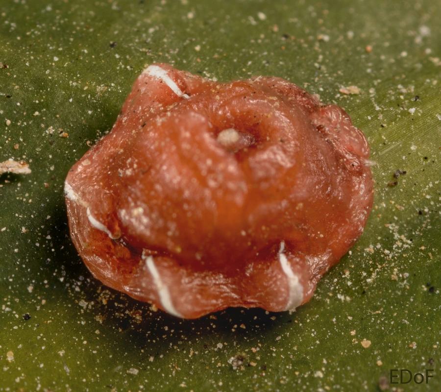

昆虫 · 动物界
红蜡蚧 Ceroplastes rubens

介壳呈半球形、覆盖厚层红色蜡质的蚧虫，多寄生在柑橘和茶树枝叶上吸食汁液，是重要的园林与果树害虫。
- 分类
- 门节肢动物门纲昆虫纲目半翅目科蜡蚧科属蜡蚧属
- 栖息环境
- 柑橘、茶和园林观赏植物的枝干与叶片，喜荫蔽通风不良处
- 地理分布
- 中国南方各省区，以及日本、东南亚等地
- 保护级别
- 暂无评估
物种志
红蜡蚧雌成虫介壳呈半球形，直径约 3–4 mm，高约 2–3 mm，表面覆盖厚层玫瑰红至暗红色的蜡质，顶部略凹陷，边缘有白色蜡带，形似一颗小红果。若虫初孵时淡红色，扁平，固定取食后逐渐分泌蜡质。
红蜡蚧分布于中国南方、日本和东南亚等地，是柑橘、茶、桂花、冬青和栀子等植物上的常见害虫。它一年发生 1 代，以受精雌成虫在枝干上越冬，翌年 5–6 月产卵，若虫孵化后爬行数小时便固定下来，终生不再移动。虫口密集时枝条被蜡壳覆盖，像涂了一层红漆，植株因汁液被大量吸食而生长衰弱，其排泄的蜜露还会诱发煤污病。防治关键在若虫孵化盛期用药，并保护红蜡蚧扁角跳小蜂等寄生蜂。
形态与习性
- 食性若虫和雌成虫刺吸枝干、叶片汁液
- 介壳半球形，直径 3–4 mm，覆玫瑰红色厚蜡层
- 生活史一年 1 代，以受精雌成虫在枝干越冬
- 危害枝干布满蜡壳，树势衰退，诱发煤污病
- 天敌红蜡蚧扁角跳小蜂等寄生蜂
- 防治若虫孵化盛期喷药，剪除虫枝
趣味知识
- 红蜡蚧的介壳像一颗红色的小果子，常被误认为植物的果实。
- 雌虫一旦固定下来便终生不再移动，靠蜡壳保护完成发育。
- 它的蜜露诱发煤污病后，枝叶会蒙上一层黑色霉层。